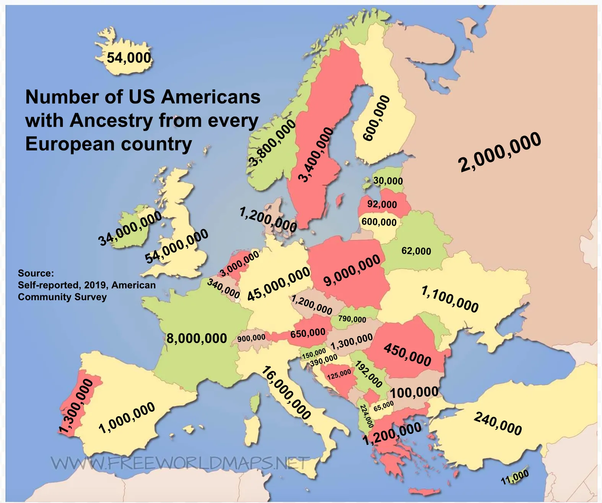
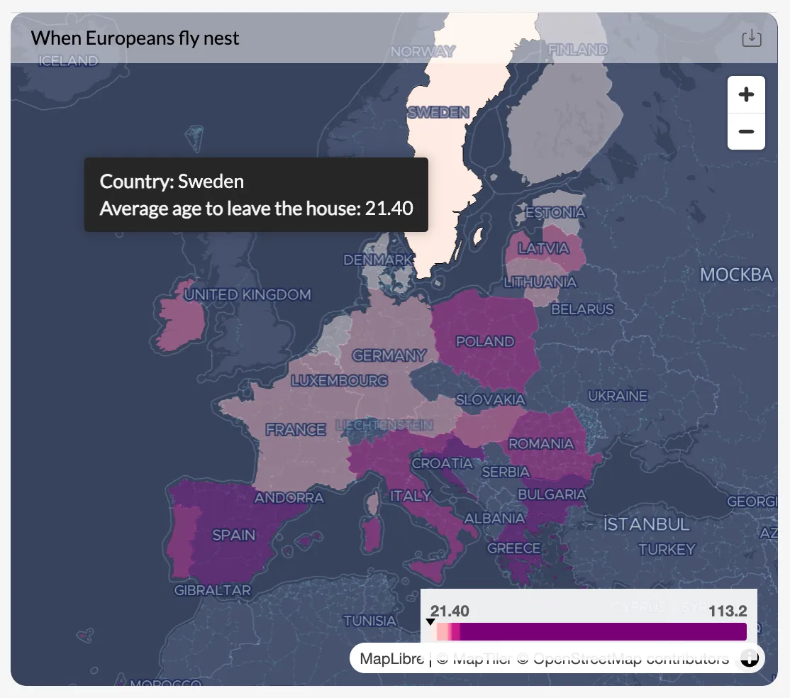
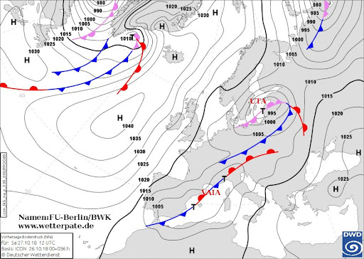
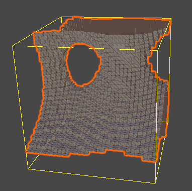
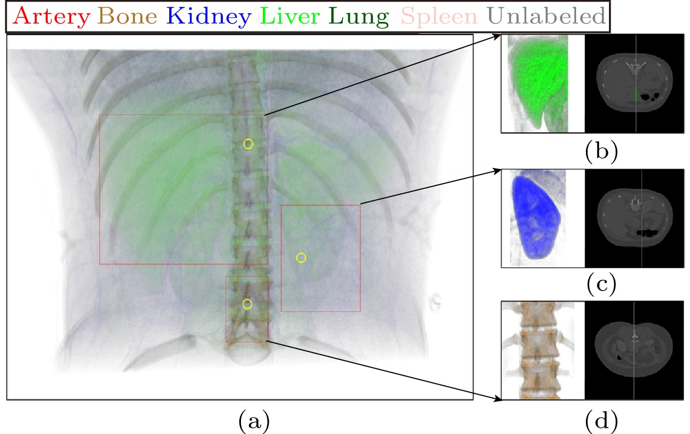
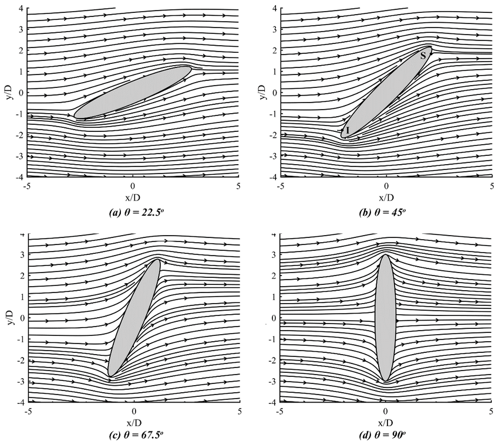
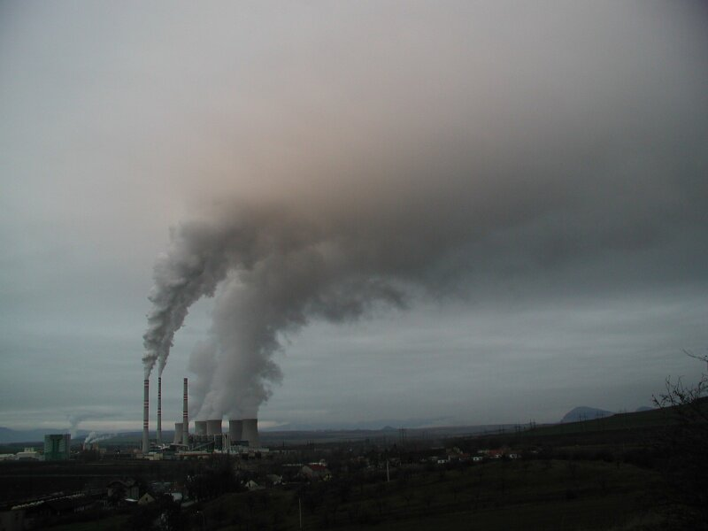
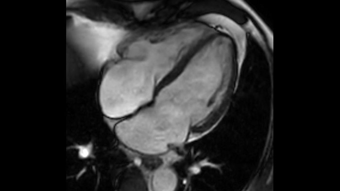
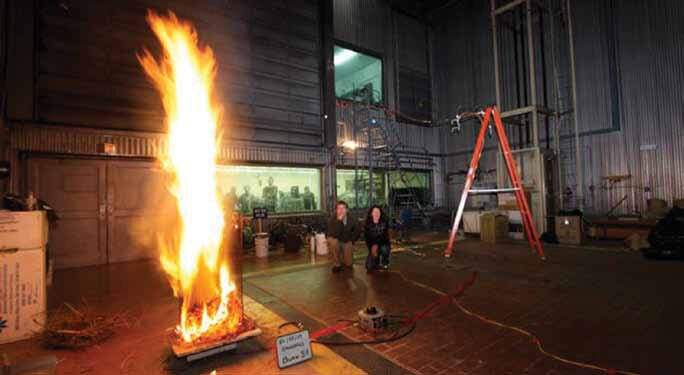
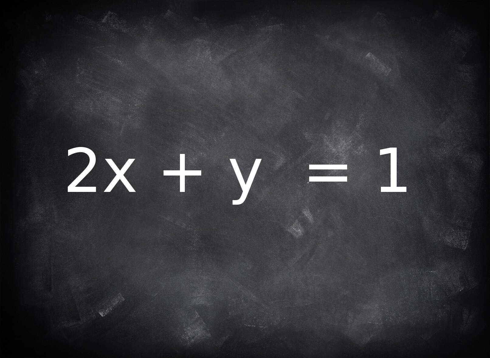

Pochopit a objevovat souvislosti (explorativní analýza).
Pracovat s přesnými daty — nevydávat za přesné to, co přesné není.
Předat nějakou zprávu — co chceme pomocí dat říct.
Měli bychom zůstat korektní — nemanipulovat.
Postup
1. Pořízení dat2. Analýza dat3. Vizualizace dat

Špatná vizualizace 1
Špatná vizualizace 2

Špatná vizualizace 3
Úvod
Vizualizace dat
Umožnit rozpoznat trendy, vzory, korelace.
Zvýraznit struktury, vzory.
Ukázat skrytější vztahy.
Potvrdit nebo vyvrátit hypotézy.
Umožnit čtenáři udělat vlastní úsudek.
Nabídnout objektivitu.
Umožnit porozumění datům v krátkém čase.
Pokud je to nutné, tak z dostupných dat vygenerovat nové
datasety
Možné typy vizualizace: grafy, diagramy, časové osy, myšlenkové mapy, …
Typy vizualizace
Typy dat k vizualizaci
Kvantitativní (numerická):
Spojitá: např. teplota, výška, čas.
Diskrétní: např. počet zákazníků, počet chyb.
Kvalitativní (kategorická):
Nominální: např. barvy, názvy měst, pohlaví.
Ordinální: např. úroveň vzdělání, hodnocení spokojenosti 1–5.
Jednorozměrná a vícedimenzionální: klasické řádky a sloupce vlastností.
Časové řady (temporal data): posloupnost a vývoj (např. akcie, vývoj
počasí).
Sítě a grafy (relační data): vztahy a propojení mezi entitami (např. sociální
sítě, struktura
databází).
Hierarchická data: Stromové struktury (např. souborový systém, organizační struktura
firmy).
Vektorová a tenzorová pole: obsahují směr a velikost (např.
rychlost a směr proudění tekutin).
Typy vizualizace
Grafy
Převádí číselná data a trendy do názorných tvarů, což umožňuje okamžitě odhalit vývojové tendence, porovnat
hodnoty a rychle pochopit celkový význam dat.
Vhodně volit typ grafů.
Volit správně škálování os.
Logaritmické škálování os.
Hlavní důraz: čtenář pochopí, co chceme vizualizací sdělit.
Jak zobrazit: pole šipek (glyfy),
proudnice (stream lines), stopa částic, LIC.
Tenzorová
Tenzor napětí, tenzor difúze
např. DTI — difuze v nervových svazcích
Matice v každém bodě → opisuje anizotropii (vlastnost je různá ve
různých směrech)
Jak zobrazit: tenzorová elipsoida / hyperelipsoida
rozmístěná v mřížce.
Problém vizualizace:
Řád pole (skalár → vektor → tenzor) určuje, kolik čísel připadá na jeden bod. U time-dependent dat přibývá
ještě časová dimenze.
Typologie dat
Reprezentace dat v mřížce (Grids)
Structured — regular
Stejný krok h ve všech směrech. Souřadnice body
se neukládají — stačí index i, j, k →
nejmenší nároky na uložení, nejrychlejší přístup.
Structured — rectilinear
Pravoúhlá, ale s nerovnoměrným krokem podél každé osy.
Ideální např. v mezní vrstvě, kde potřebuje hustší buňky u stěny
a řídké ve volném proudu.
Structured — curvilinear
Ohýbaná (body-fitted) mřížka přizpůsobená geometrii tělesa.
Souřadnice se musí ukládat pro každý bod, struktura i, j, k
ale zůstává.
Unstructured
Volná síť elementů — v 2D trojúhelníky / obdélníky, ve 3D
tetraedry a hexaedry.
Výhoda: libovolně složitá geometrie a lokální zhuštění.
Nevýhoda: musí se ukládat konektivita → více dat, pomalejší přístup.
AMR — Adaptive Mesh Refinement
Mřížka se dynamicky zjemňuje jen tam, kde se něco děje
(velké gradienty, rozhraní, šokové vlny). Hierarchie hrad (quadtree / octree),
buňky se dělí a zase slučují za běhu výpočtu → velká úspora
paměti i času.
Body vs. buňky
Node-centered — hodnota na vrcholu
Cell-centered — hodnota průměru buňky
Dimenze: 1D (křivka) → 2D (řez, mapa) → 3D (objem)
→ 3D + čas (animace). Rozměr domény i rozměr pole se řeší zvlášť.
Typologie dat
Standardní datové formáty pro mřížková data
VTK
Rodina souborů Toolkitu VTK — geometrie sítě i datová pole
v jednom souboru. Textový i binární zápis, varianty podle typu mřížky
(.vtk, .vti, .vtu, .vtp, .pvd).
De-facto standard pro proudění a 3D data, čte ho
ParaView i VisIt.
NetCDF
Dimenzionální pole na strukturovaných mřížkách
(.nc) — pojmenované osy,
self-describing proměnné + atributy (jednotky, kalendář).
Standard klimatologie, meteorologie a oceanografie
(modely atmosféry, reanalýzy, časové řady).
HDF5
Univerzální hierarchický kontejner
(.h5, .hdf5) — skupiny a datasety
jako strom adresářů, podporuje obří data a paralelní I/O.
Často spodní vrstva jiných formátů
(včetně NetCDF-4) pro data z experimentů a superpočítačů.
DICOM
Digital Imaging and Communications in Medicine
(.dcm) — snímky CT/MR + bohatá
metadata o pacientovi, přístroji a řezu (poloha, orientace, thickness).
Nativní formát pro Slicer3D, OsiriX i RadiAnt,
sada řezů tvoří 3D objem.
Volba formátu není detail:
Formát rozhoduje o velikosti na disku, přenositelnosti mezi nástroji a zčásti i o tom,
co vůbec jde vizualizovat (strukturovaná data se načtou jinak než volná síť).
V praxi se často jde cestou surová data → převod do VTK → ParaView/VisIt.
Vizualizace skalárních dat
Skalární mřížková data: Isolines (vrstevnice)
Čáry stejných hodnot spojují na mapě či grafu body se shodnou velikostí veličiny.
Křivky vyznačující konstantní hodnotu.
iso = rovnost.
Spojuje body se stejnou hodnotou.
Přehledná vizualizace spojitých polí.
Algoritmus Marching squares (vrstevnice) nebo Marching cubes
(isoplochy).
TopografieMeteorologieFyzika polí

Vrstevnice — isolinie nadmořské výšky
Vizualizace skalárních dat
Marching Cubes (algoritmus pro izoplochy)
Vytváří 3D polygonální síť (trojúhelníkový model) reprezentující izoplochu z mřížky skalárních dat.
Mřížkou voxelů se postupuje buňku po buňce — odtud název „marching“
Každých 8 rohů buňky se porovná s izohodnotouc →
8 bitů stavu vně / uvnitř
Hrana s rohy v různých stavech izoplochu protíná; bod spočteme
lineární interpolací podél hrany
Tabulka pak řekne, které průsečíky mezi sebou spojit trojúhelníky
Výsledkem je triangulovaná síť — osvětlitelná, otáčecí, vhodná i pro animaci v čase

Vizualizace skalárních dat
Marching Cubes (algoritmus izolovací plochy)
Lookup table — 256 případů, 15 kanonických
Osm rohů dává 28 = 256 kombinací stavů.
Rotací, zrcadlením a záměnou uvnitř ↔ vně se ale výpočetně vyplatí řešit jen 15 kanonických
případů.
#0 bez povrchu a 14 tvarů řezu.
Vizualizace skalárních dat
Přímé promítání 3D dat do 2D
Vizualizace bez vytvoření povrchu z dat.
Přímé vykreslování objemu (Direct Volume Rendering / DVR).
Buď přímá projekce dat do roviny obrazovky.
Nebo nejprve manipulace s daty a následné promítnutí.
Bez nutnosti nejprve vytvářet mezipovrch či polygonovou síť.
Možnosti
Mlha s různou intenzitou
Kapalina
Řezy prostorem

Příklad přímého promítání
Vizualizace vektorových dat
Vektorová data: Stream lines (proudnice)
Proudnice je křivka, která je v každém svém bodě tečná k rychlostnímu vektoru pole.
Vizualizace proudění tekutiny.
Zobrazuje směr proudění.
Kudy by se pohybovala částice vhozená do tekutiny.
Výpočet numerickou integrací (např. Runge-Kutta) počátečních bodů (seed points)

Proudnice obtékaného tělesa
Jak získat vědecká data
Postup — od jevu k vizualizaci
1. Přírodní jev
Jev v přírodě nebo reálném světě:
Chceme zjistit, jak probíhá.
Chceme predikovat výsledek nebo simulovat jev za nestandardních podmínek.
Pozorování jevu

Reálná situace

Měření
Postup — od jevu k vizualizaci
2. Nutné studovat přírodní zákony
Nastudovat, jak jev probíhá.
Získat co nejvíce informací o jevu.
Mnoho jevů je již prozkoumaných, ale nebyla dosud možnost je popsat matematicky a
fyzikálně.
Zákony a měření
Postup — od jevu k vizualizaci
3. Fyzikální popis
Na základě výzkumu popsat jev pomocí fyziky a matematiky.
Většinou se jedná o diferenciální rovnice.
Nutná hluboká znalost fyzikálních zákonů.
Není úplně nutné pro pouhou vizualizaci.
Matematický model jevu
Postup — od jevu k vizualizaci
4. Získat experimentální data
Nutné získat experimentální data pro jednodušší případy.
Podle nich se potom kalibruje model.

Experiment a měření
Postup — od jevu k vizualizaci
5. Vytvořit matematický model
Podle fyzikálního popisu vytvořit matematický model.
Model je ve většině případů zjednodušený.
Většinou nejsme schopni řešit rovnice analyticky (přesné výsledky).

Model a zjednodušení
Postup — od jevu k vizualizaci
6. Návrh a implementace numerického výpočtu
Rovnice nutné převést do formy vhodné pro počítače.
Většina diferenciálních rovnic vede na velké soustavy lineárních rovnic (velké
matice).
Pozor na přesnost
Výpočty na počítačích nejsou přesné — vznikají chyby zaokrouhlování a problémy
s přesností desetinných čísel.